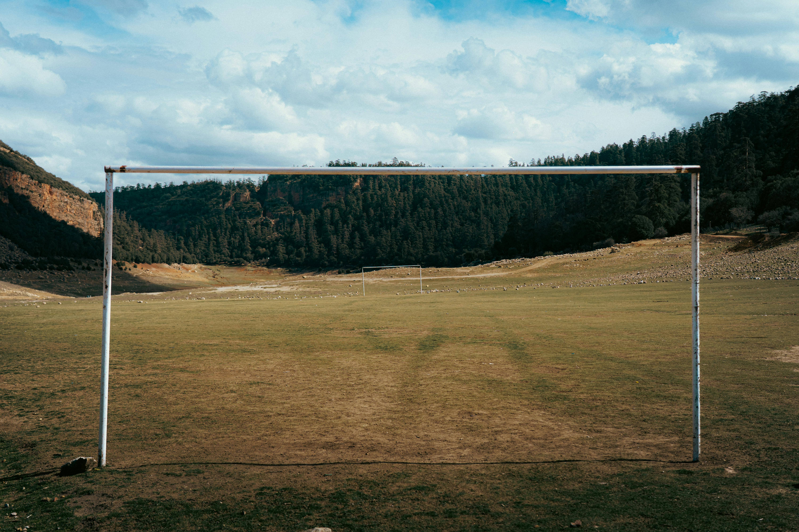
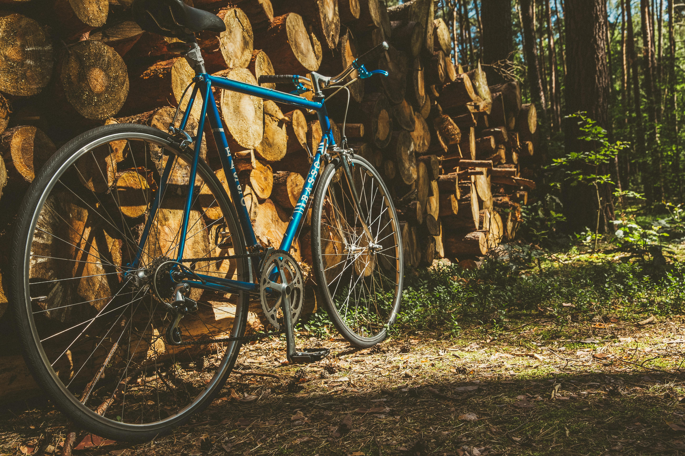

Gaming

Gaming helps me escape, relax, and sharpen my thinking. I enjoy strategy and adventure games that push my creativity and problem-solving skills. For me, gaming isn't just fun — it's also a way to learn new things, stay focused, and improve my decision-making under pressure.
Football
Football isn't just a game to me — it's a passion. I love the energy, the teamwork, and the challenge it brings. Whether I'm playing with friends or watching a match, football teaches me discipline, coordination, and the value of working together toward a goal. It's more than a sport — it's a way to stay active and connected.
Cycling
Cycling gives me freedom. It's my favorite way to clear my mind and enjoy nature. Riding through quiet roads and fresh air helps me feel calm and focused. It's also a great way to stay healthy and explore new places — all while moving forward at my own pace.
Movies

I love watching movies because they take me on emotional journeys. Whether it's a dramatic story, an action-packed scene, or a touching moment, movies inspire me and teach me about different people and cultures. They're my favorite way to relax and discover new perspectives.